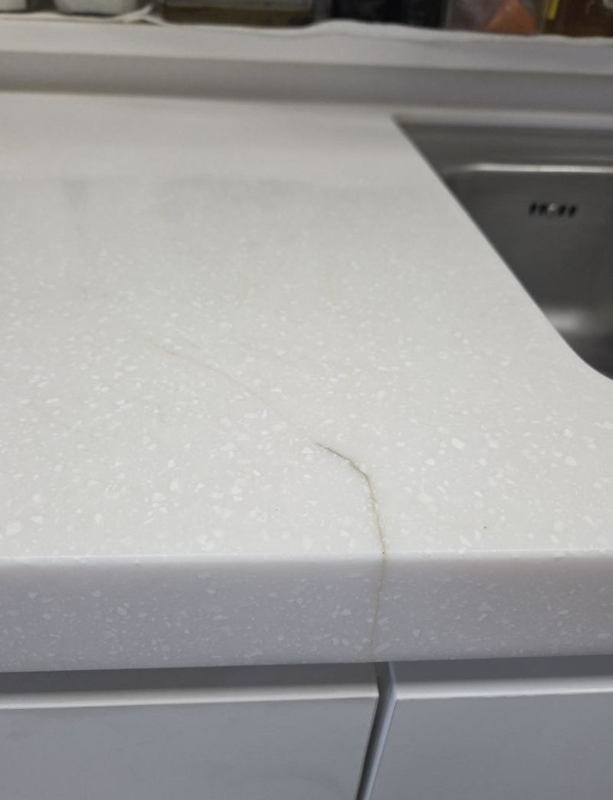
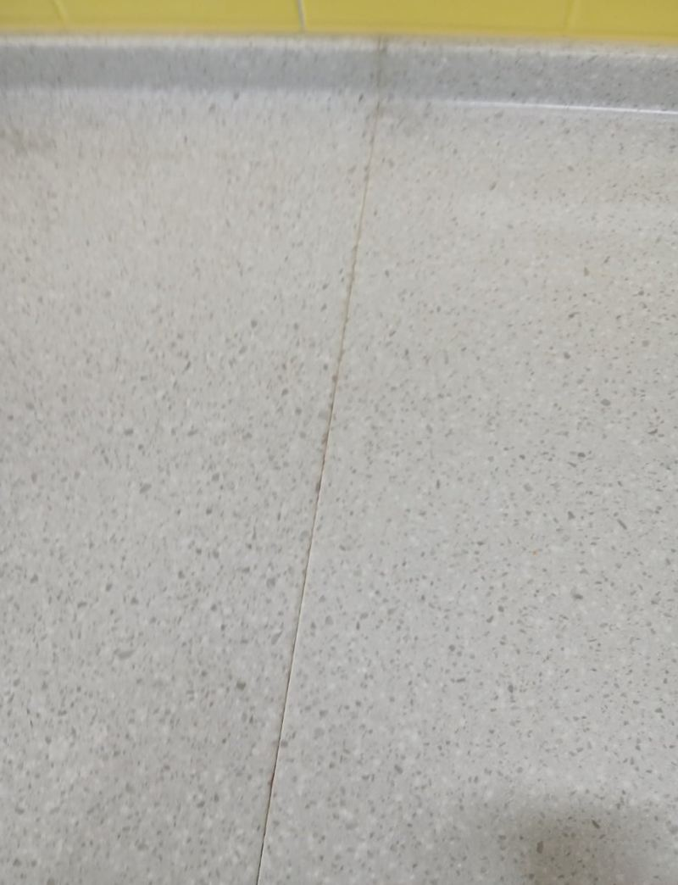
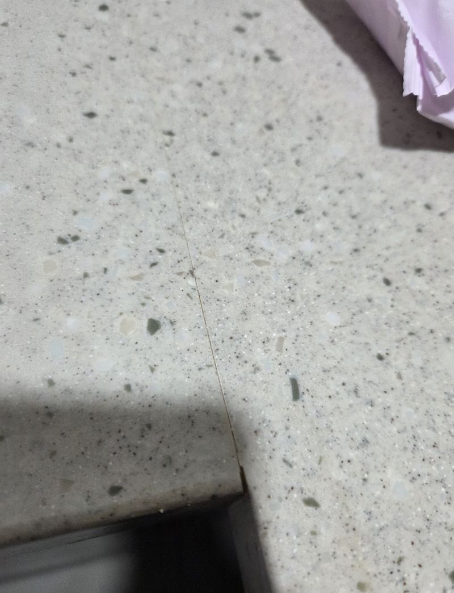
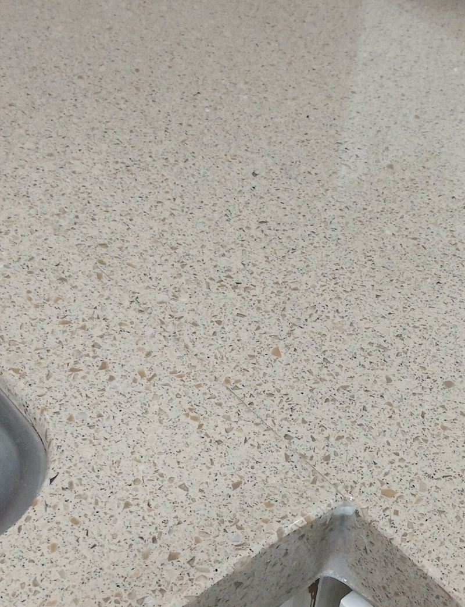
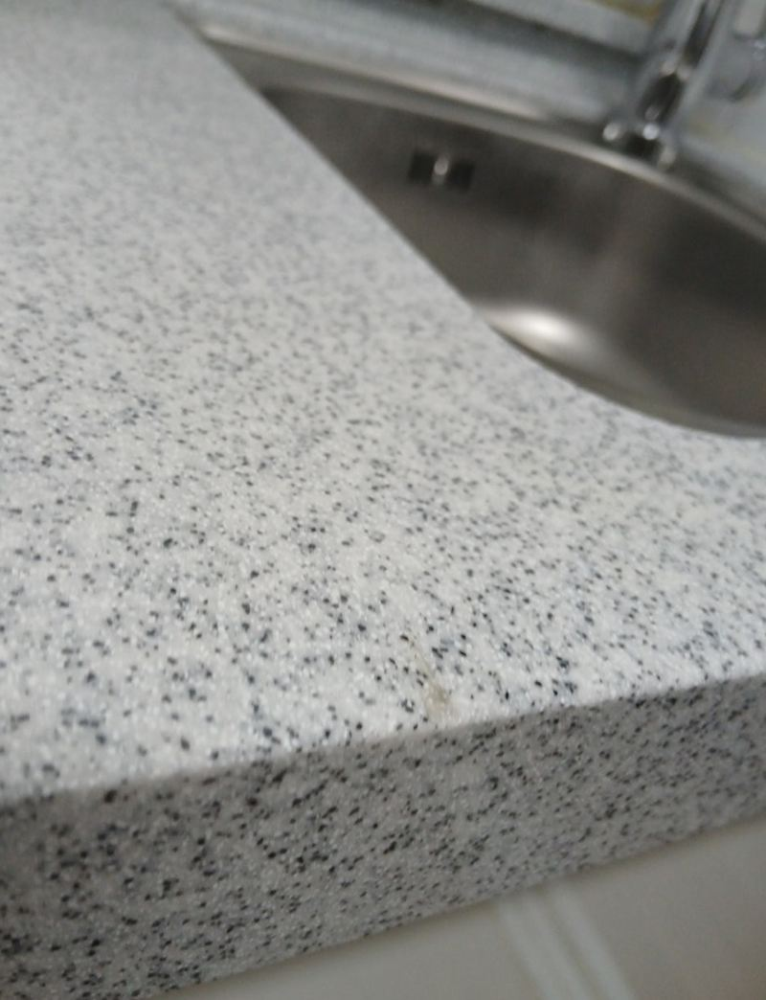
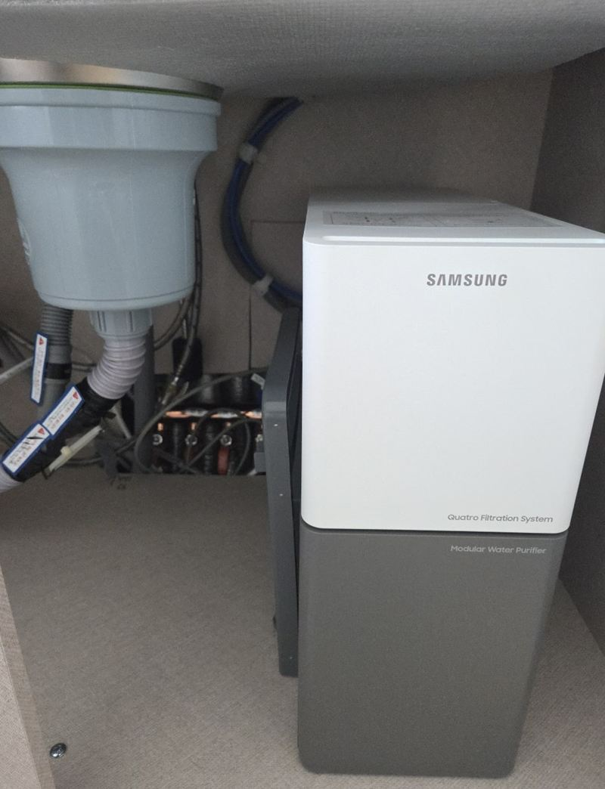

홈 › 상판 복원
싱크대 대리석 상판
깨짐·구멍 복원 사례
상판에 금이 하나 갔다고 해서 주방 전체를 뜯을 필요는 없어요. 대부분은 상한 자리만 메우고, 갈고, 광을 내서 다시 쓸 수 있어요. 완전히 새것처럼 보이게 하기보다 눈에 덜 띄고 오래 버티게 만드는 게 목표예요.

상판 손상, 이렇게 나눠 봐요
- 모서리가 깨져 떨어졌어요떨어진 조각이 있으면 붙이고, 없으면 메워서 모양을 다시 잡아요.
- 이음매를 따라 실금이 갔어요틈을 채운 뒤 표면을 갈아서 높이를 맞춰요.
- 기기를 뺐더니 구멍이 남았어요정수기·과일세척기·쿡탑 자리 구멍을 막거나 크기를 줄여요.
- 칼자국·흠집·얼룩이 많아요연마와 폴리싱으로 표면을 다시 정리해요.
복원 작업이 진행되는 순서
손상 부위 주변을 깨끗이 닦고 → 틈이나 구멍을 채우고 → 굳힌 다음 → 단계별로 갈아 높이를 맞추고 → 마지막에 광을 내요. 색이 비슷한 재료를 고르지만 상판 무늬에 따라 흔적이 조금 남을 수 있어서, 그 부분은 사진을 보며 미리 말씀드려요.
지역별 상판 복원 현장
 천안 균열 생긴 대리석 상판 부분 보수 방법천안 · 블로그 현장기 ↗
천안 균열 생긴 대리석 상판 부분 보수 방법천안 · 블로그 현장기 ↗ 청주 과일세척기 제거 후 싱크대 복원 가능할까청주 · 블로그 현장기 ↗
청주 과일세척기 제거 후 싱크대 복원 가능할까청주 · 블로그 현장기 ↗
김포 싱크대 흠집 복원 방법과 작업 과정김포 · 블로그 현장기 ↗
하남 싱크대 대리석 연결부 실금 수리 방법하남 · 블로그 현장기 ↗ 하남 부엌 대리석 상판 균열 연마·폴리싱 과정하남 · 블로그 현장기 ↗
하남 부엌 대리석 상판 균열 연마·폴리싱 과정하남 · 블로그 현장기 ↗
하남 어린이집 싱크대 대리석 깨짐 수리하남 · 블로그 현장기 ↗ 종로 싱크대장 리폼, 대리석 절단 작업 과정서울 종로 · 블로그 현장기 ↗
종로 싱크대장 리폼, 대리석 절단 작업 과정서울 종로 · 블로그 현장기 ↗
수원 싱크대 대리석 깨짐 수리 방법과 비용수원 · 블로그 현장기 ↗
의정부 싱크대 대리석 상판 구멍 복원 방법의정부 · 블로그 현장기 ↗
상판 복원 질문
복원한 자리가 티가 나나요?
무늬가 단순한 상판일수록 덜 보여요. 알갱이 무늬가 큰 상판은 가까이서 보면 차이가 보일 수 있어요.
어린이집·음식점 상판도 하나요?
네, 어린이집 싱크대 깨짐 수리 현장도 있어요. 사용 시간을 피해 일정을 맞춰요.
손상 부위를 가까이, 상판 전체를 멀리서 한 장씩 찍어 보내 주세요.
전화 상담 010-4517-9872